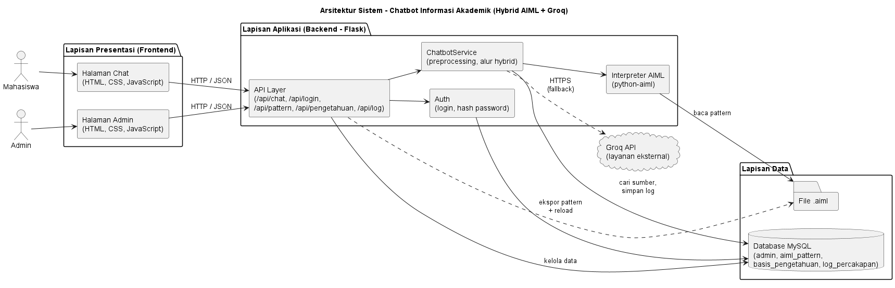

Tanya jawab akademik
Mahasiswa bertanya lewat halaman chat dan mendapat jawaban informasi akademik.
Website ini membahas jurnal tentang chatbot informasi akademik berbasis web yang memakai metode AIML. Kelompok kami mereview jurnalnya dan merancang sistem chatbot hybrid AIML dan Groq.
Contoh percakapan
Kapan jadwal pengisian KRS?
Pengisian KRS mengikuti kalender akademik. Chatbot akan menampilkan tanggal yang tersimpan di basis pengetahuan.
Terima kasih!
Rancangan chatbot yang kami buat memiliki enam fitur untuk mahasiswa dan admin.
Mahasiswa bertanya lewat halaman chat dan mendapat jawaban informasi akademik.
Pertanyaan dicocokkan dengan pattern AIML agar jawaban sesuai aturan yang terdaftar.
Jika pattern tidak ditemukan, pertanyaan diteruskan ke layanan Groq sebagai cadangan.
Admin menambah dan mengubah pattern AIML setelah login.
Admin mengelola data yang dipakai sebagai sumber jawaban.
Riwayat percakapan tersimpan dan dapat dilihat admin untuk evaluasi.
Frontend HTML, CSS, dan JavaScript berkomunikasi dengan backend Flask, database MySQL, dan Groq API.

Kelas C, Pengembangan Aplikasi Web.